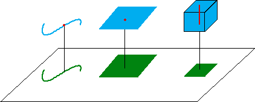
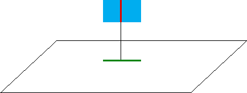

|  |
| Consider three Euclidean objects - a curve,
a square, and a a cube - in
|
| Typically, a curve in space projects to a curve in the plane. |
| Typically, a square in space projects to a square in the plane. |
| Typically, a cube in space projects to a square in the plane. |
| A typical point of the curve in the plane comes from a point in the curve in space. In terms of dimensions, 1 + 0 = 1. |
| A typical point of the square in the plane comes from a point in the square in space. In terms of dimensions, 2 + 0 = 2. |
| A typical point of the square in the plane comes from a line segment in the cube in space. In terms of dimensions, 2 + 1 = 3. |
| Some special placements of the Euclidean shapes can give different results. For example, if one side of the square is perpendicular to the plane, the square projects to a line in the plane. |
| A typical point of the line in the plane comes from a line segment in the Square in space. In terms of dimensions, 1 + 1 = 2. |
|  |
Return to projections.